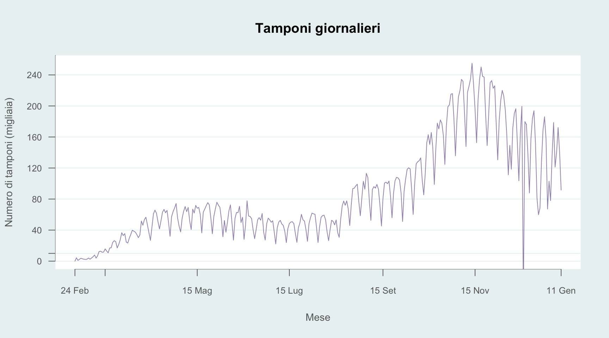

Looking at what matters the most
Maurizio La Rosa
14/11/2020
The problem of the data
The most problematic issue about the way the Italian government has decided to present the data about the evolution of the pandemic is that the data themselves were (and to a great extent still are) not accurate. This fact has mislead the perception of the health emergency by the public and has made it difficult to develop a rational way of fighting it, even on the account of the institutions. It alsa has determined that very different situations have been treated as if they were the same. The problem of the (missing) accuracy of the data relates to different aspects of the data collection. While I try to show the most obvious, I will certainly miss arguments that are less obvious:
- It is fairly clear that the most effective way of saying if a person has been infected is to test her. Although straightforward, this simple fact clashes with the harsh reality that there can never be enough tests to be performed daily by the healthcare system. This has been true during the first wave, when Italy had not enough tests available, but it remains true today, simply because the healthcare system cannot afford to perform a large amount of tests, in any case. What has greatly changed between the first and the second wave is the capacity to test: this has been greatly increased

| Mean.first.wave | Mean.second.wave |
|---|---|
| 10671 | 124720 |
## Min. 1st Qu. Median Mean 3rd Qu. Max.
## 0.0 62.0 132.0 330.2 555.0 1662.0
| First.wave | Second.wave |
|---|---|
| 481 | 6083 |
| 691 | 5949 |
## Warning in matrix(diff(covid_data$totale_casi)/diff(covid_data$tamponi), : data
## length [6357] is not a sub-multiple or multiple of the number of rows [289]
## Warning in matrix(diff(covid_data$totale_casi)/diff(covid_data$tamponi), : data
## length [6357] is not a sub-multiple or multiple of the number of rows [289]

regioni_nord <- data.frame(rbind( subset(covid_data,covid_data\(codice_regione==1), subset(covid_data,covid_data\)codice_regione==2), subset(covid_data,covid_data\(codice_regione==3), subset(covid_data,covid_data\)codice_regione==5), subset(covid_data,covid_data\(codice_regione==6), subset(covid_data,covid_data\)codice_regione==7), subset(covid_data,covid_data\(codice_regione==8), subset(covid_data,covid_data\)codice_regione==21), subset(covid_data,covid_data\(codice_regione==22))) regioni_centro <- data.frame(rbind( subset(covid_data,covid_data\)codice_regione==9), subset(covid_data,covid_data\(codice_regione==10), subset(covid_data,covid_data\)codice_regione==11), subset(covid_data,covid_data\(codice_regione==12))) regioni_sud <- data.frame(rbind( subset(covid_data,covid_data\)codice_regione==13), subset(covid_data,covid_data\(codice_regione==14), subset(covid_data,covid_data\)codice_regione==15), subset(covid_data,covid_data\(codice_regione==16), subset(covid_data,covid_data\)codice_regione==17), subset(covid_data,covid_data\(codice_regione==18), subset(covid_data,covid_data\)codice_regione==19), subset(covid_data,covid_data$codice_regione==20)))
Data Regione Totale positivi Guariti Deceduti
4046 2020-12-08 Molise 2526 2711 144
867 2020-12-08 Valle d’Aosta 870 5557 339
4913 2020-12-08 Basilicata 6348 2576 181
6358 2020-12-08 P.A. Trento 2457 14241 719
5202 2020-12-08 Calabria 10366 8141 360
5780 2020-12-08 Sardegna 15160 9075 543
2890 2020-12-08 Umbria 5746 19121 477
6069 2020-12-08 P.A. Bolzano 10883 14078 594
3757 2020-12-08 Abruzzo 16449 13267 994
3179 2020-12-08 Marche 13821 17655 1355
1734 2020-12-08 Friuli Venezia Giulia 14877 20518 1089
2023 2020-12-08 Liguria 9745 41865 2563
4624 2020-12-08 Puglia 47312 17186 1759
5491 2020-12-08 Sicilia 39555 32171 1829
2601 2020-12-08 Toscana 26024 80461 2933
3468 2020-12-08 Lazio 94009 36418 2701
2312 2020-12-08 Emilia-Romagna 66522 64480 6268
4335 2020-12-08 Campania 98765 66604 2064
1445 2020-12-08 Veneto 79748 86822 4374
578 2020-12-08 Piemonte 64513 108392 6746
1156 2020-12-08 Lombardia 111829 297290 23208
289 2020-12-08 Italia 737525 958629 61240
Totale casi Tamponi effettuati
4046 5381 99517
867 6766 56474
4913 9105 162939
6358 17417 398913
5202 18867 384990
5780 24778 403381
2890 25344 442893
6069 25555 325198
3757 30710 444065
3179 32831 438149
1734 36484 778693
2023 54173 631209
4624 66257 853140
5491 73555 1040198
2601 109418 1661394
3468 133128 2384802
2312 137270 2248912
4335 167433 1721240
1445 170944 2910230
578 179651 1687411
1156 432327 4312365
289 1757394 23386113
```